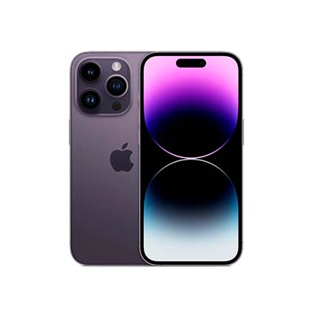
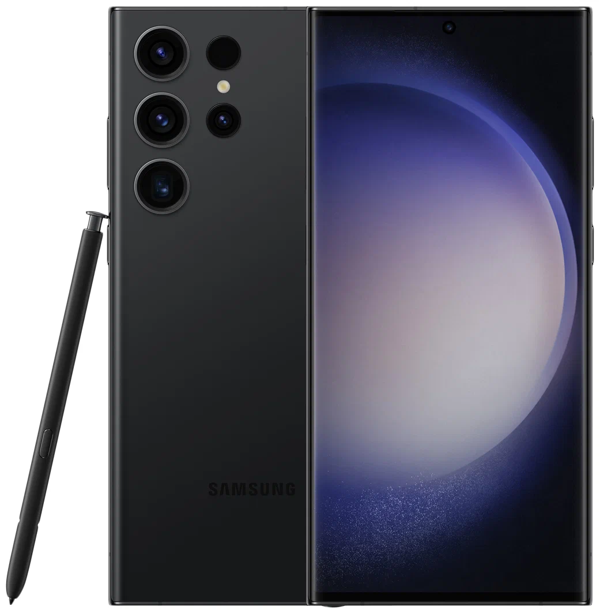

telefonlar haqida ma'lumot!
Apple iPhone 14 Pro Max получил большой и в то же самое время очень качественный дисплей. Он поддерживает повышенную частоту обновления 120 Гц, что стало стандартом для современных смартфонов. Однако, панель использует продвинутую технологию, которая сильно экономит заряд батареи. Такая частота существенным образом улучшает общую плавность работы смартфона. Смартфон имеет функцию Always On Display, а также сертифицирован по стандарту Dolby Vision.
Samsung Galaxy S23 Ultra получил яркий LTPO-дисплей с адаптивной частотой обновления до 120 Гц, который наносит минимум вреда глазам пользователям. Максимальной яркости более чем достаточно, но и в ночное время минимальная яркость не доставляет неудобств. Вырез в дисплее никак не мешает пользоваться смартфоном, а альтернативным способом ввода является S Pen. Смартфон поддерживает отображение HDR-контента, однако Dolby Vision здесь нет.
salommm